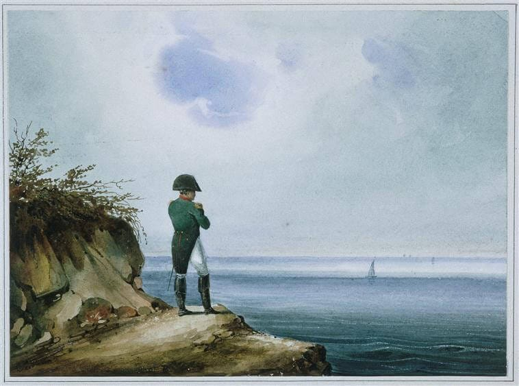

Are Leaders Punished For Wars?

{kind=link}
Leaders usually gain support during international crises, a phenomenon called the Rally ’round the flag effect. Across the wars of 2026 – Russia-Ukraine, United States-Iran, Israel-Lebanon – there are claims of a sort of inverse effect, where the leaders begin to lose support and feel they must continue the crisis because they will face consequences if they end the war short of victory.
On Russia-Ukraine, “Vladimir Putin is caught in a vice of his own making” because victory is unlikely and a peace deal would risk economic and political instability, according to The Economist.
As for President Trump’s options on Iran, the New York Times writes that “Having entered the conflict with little strategy for victory, he now is struggling for a face-saving way to exit.”
Meanwhile, the Washington Post reports that U.S. intel has warned President Trump that Israeli Prime Minister Netanyahu is likely to undermine a peace deal with Iran due to “intense political pressure to continue waging his country’s war in Lebanon.”
Past cases do suggest there is a reason for leaders to be concerned. Look at what happened to President Biden after the withdrawal from Afghanistan. NPR calls the withdrawal “a turning point in the Biden presidency, a moment when his approval ratings fell, and never recovered.”
So what does the research say? In democracies and vulnerable autocracies a leader’s tenure depends a great deal on how the war goes, but only if that leader is culpable for the war being in charge when the war started or otherwise supporting it. In addition, in the United States, a president’s foreign policy outcomes can affect their legislative agenda and midterm elections.
Culpable Democracies and Vulnerable Autocracies
Which type of country is more likely to punish a leader for losing a war, democracies or autocracies? The first researchers to analyze war outcomes and leadership changes were surprised to find that autocrats seemed more sensitive to war outcomes than democracies. Compared to leaders with no war outcome, winning autocrats stayed in power and losing autocrats were removed. In democracies, victorious leaders were more likely to stay in power than defeated leaders, but surprisingly, defeated leaders were more likely to stay in power than those with no war outcome.1 Furthermore, the difference between winners and losers in terms of staying in power is much smaller for democratic leaders than it is for autocratic leaders.2 These findings suggested that democratic leaders faced no punishment for losing wars.
Further research found that whether a leader faced consequences depended on whether they were culpable for the war and if they were vulnerable to removal. Leaders are coded as culpable for a war if they started it or supported the leader that did. Once you account for culpability, winning leaders in democracies are more likely to stay in power and losing leaders are less likely compared to a leader with no war outcome. Democratic leaders that are not culpable are also rewarded for winning wars, and non-culpable losers seem to escape punishment.3
The analysis finds that non-culpable losers are more likely to lose power, but the finding is not statistically significant. The lack of statistical significance means that the result is weak enough that we cannot be confident that it is not just due to chance. This does not mean that there is no relationship, just that the analysis cannot detect one. It is more difficult to detect relationships with small sample sizes, so it is worth noting that they found a result for democratic leaders that lost wars even though they only had sixteen democratic leaders that lost wars in the 90 years of data.4
To understand the importance of culpability for democracies, consider a leader who starts a war that is not going well. The leader argues that victory is just around the corner, but the public disagrees and replaces them in the next election with their opponent, who promises to end the war. Once in power, the opponent ends the war in a draw or defeat, just as they promised, and is reelected to a second term. Most datasets on leaders and wars would show that the first leader has a short tenure and no war outcomes, and the second leader has a long tenure and lost a war. An analysis of this case that only looks at tenure and war outcomes would conclude that leaders stay in power longer when they lose a war. Only by including culpability do you find that leaders are punished for losing wars they are responsible for.
Culpability is less important in autocracies because leaders are rarely replaced during a war with non-culpable leaders. What is important is whether an autocratic leader is vulnerable or not; autocracies have low vulnerability if they have a personalist regime where the leader has consolidated power, and the country’s elites can not coordinate to remove the leader. Once you account for vulnerability, autocrats with high vulnerability face consequences similar to democracies: culpable leaders that lose a war are less likely to stay in power. Low-vulnerability autocrats still prefer winning over losing, but regardless of war outcome, they are much more likely to stay in power than high-vulnerability autocrats.5
Once they are removed from power, leaders of democracies and autocracies face quite different situations. Leaders of autocracies that lose power face punishment in the form of exile, jail, or death, 41% of the time. For democratic leaders, the odds of after-office punishment are only 7%.6
It may seem strange to assign culpability to both countries at the start of the war instead of assigning blame to the initiator that started the war by attacking first. However, determining which side initiated can be difficult, as both sides are often escalating during a crisis and countries often claim they attacked pre-emptively in self-defense. Research that included initiation found that all culpable leaders are equally likely to be punished for losing a war, regardless of who initiated it.7
If the current leaders of the United States, Russia, and Israel are worried about whether ending their ongoing wars would jeopardize their tenure, then they should be thinking about their culpability, their regime type, and what kind of outcome they can achieve. In this case, all three leaders are culpable in that they were in power when the war started.
If Putin is a low-vulnerability autocrat, then while victory or a draw is still preferable, he is likely to stay in power no matter how he frames the outcome. However, if Putin is a high-vulnerability autocrat, then he should do everything he can to avoid an outcome that looks like a defeat, as that would greatly increase their odds of removal. The same goes for the democratic leaders.
Lame Duck Consequences
President Trump faces term limits, so regardless of how the war with Iran ends, he will leave office on January 20, 2029. Since the war outcome will not affect his tenure, will he face other consequences because of his foreign policy decisions? Let’s look at examples of war outcomes affecting democratic leaders in the past.
Perhaps foreign policy failures affect a president’s legislative agenda. Losing a war could lower their political capital or public approval in a way that limits them. U.S. presidents have shown this concern before. President Johnson knew that the Vietnam War could not be won, but still escalated the conflict because he believed that withdrawing would put his domestic legislative program at risk.8
The evidence for a relationship between a president’s approval and legislative success is surprisingly mixed, suggesting that presidential approval may only be helpful in certain cases. One study found that presidential approval does lead to legislative success, but only on issues that are salient and complex; put another way, popular presidents can get their way on issues that the public cares about but is not informed enough to already have entrenched positions.9 Another study found further evidence that presidential approval does help them get their preferred policy on important (salient) issues.10
Does this connection between presidential approval and legislative success apply to public opinion on foreign policy? Research suggests that it does. Based on public opinion polls of how presidents handled militarized international disputes from 1953-2001, as public support moves from low to high (38% to 78%), Congress is 20% more likely to pass a bill supported by the president.11
In the U.S. case, a lame duck president may still be concerned about how their foreign policy could affect their party in midterm elections. Presidents have more legislative success when their party has a greater share of Congress.12 In terms of passing important legislation in the United States, having your party control both chambers is equivalent to a 20 percent increase in approval ratings.13
Midterm elections are sometimes called a referendum on the president. Presidential approval is indeed a strong predictor of their party’s vote share.14 While conventional wisdom may suggest that voters care more about domestic issues than international issues, there is growing evidence that voters do factor foreign policy into their decision-making, especially around military operations.15 For example, Republican Senate candidates lost vote share in countries that experienced more casualties in Iraq.16
All of this suggests that leaders do face domestic consequences for foreign policy failure. For leaders of democracies and vulnerable autocracies, the risk of losing power increases somewhat as a war moves from a victory to a draw and increases drastically moving from a draw to a defeat. For autocratic leaders, the loss of tenure also has a substantial risk of personal punishment - exile, imprisonment, and even death. For lame duck leaders who do not have to worry about reelection still face consequences in terms of their legislative agenda and midterm electoral losses.
These conclusions are based on research that draws from history. Whether these findings apply to the future is always an open question. Sometimes there are significant shifts. From 1948-1947 the U.S. had a bipartisan foreign policy consensus around U.S. leadership and Soviet containment, making foreign policy less important for voting decisions. That changed by 1972 as the Democratic Party broke with the consensus by opposing the Vietnam War and seemingly favoring negotiations with the Soviet Union. Voters now had a choice on foreign policy. After that, research shows that foreign policy became as important in vote choice as domestic issues.17 This goes for all of the research reviewed on this site; it feels especially relevant here as recent developments, such as cell phones, social media, and the collapse of legacy media, may change how foreign policy shapes leader approval and elections.
Acknowledgements: Thanks to Lucy Ouckama for draft comments. Thanks to Coefficient Giving for supporting this Living Lit Review.
Footnotes
Based on data from 1919-1999. Chiozza, Giacomo, and H. E. Goemans. 2004. “International Conflict and the Tenure of Leaders: Is War Still ‘Ex Post’ Inefficient?” American Journal of Political Science 48(3): 604–19.↩︎
Debs, Alexandre, and H. E. Goemans. 2010. “Regime Type, the Fate of Leaders, and War.” American Political Science Review 104(03): 430–45. doi:10.1017/S0003055410000195.↩︎
Based on data from 1919-2003. Croco, Sarah E., and Jessica LP Weeks. 2016. “War Outcomes and Leader Tenure.” World Politics 68(4): 577–607.↩︎
Croco and Weeks 2016.↩︎
Croco and Weeks 2016.↩︎
Debs and Goemans 2010.↩︎
Croco and Weeks 2016.↩︎
Downes, Alexander B. 2009. “How Smart and Tough Are Democracies? Reassessing Theories of Democratic Victory in War.” International Security 33(4): 9–51. doi:10.1162/isec.2009.33.4.9.↩︎
Canes-Wrone, Brandice, and Scott De Marchi. 2002. “Presidential Approval and Legislative Success.” Journal of Politics 64(2): 491–509. doi:10.1111/1468-2508.00136.↩︎
Barrett, Andrew W., and Matthew Eshbaugh-Soha. 2007. “Presidential Success on the Substance of Legislation.” Political Research Quarterly 60(1): 100–112. doi:10.1177/1065912906298605.↩︎
Gelpi, Christopher, and Joseph M. Grieco. 2015. “Competency Costs in Foreign Affairs: Presidential Performance in International Conflicts and Domestic Legislative Success, 1953–2001.” American Journal of Political Science 59(2): 440–56. doi:10.1111/ajps.12169.↩︎
Canes-Wrone and Marchi 2002.↩︎
Barrett and Eshbaugh-Soha 2007.↩︎
Grossmann, Matt, and Christopher Wlezien. 2024. “A Thermostatic Model of Congressional Elections.” American Politics Research 52(4): 355–66. doi:10.1177/1532673X241253813.↩︎
Aldrich, John H., Christopher Gelpi, Peter Feaver, Jason Reifler, and Kristin Thompson Sharp. 2006. “Foreign Policy and the Electoral Connection.” Annual Review of Political Science 9(1): 477–502. doi:10.1146/annurev.polisci.9.111605.105008.↩︎
Kriner, Douglas L., and Francis X. Shen. 2007. “Iraq Casualties and the 2006 Senate Elections.” Legislative Studies Quarterly 32(4): 507–30. doi:10.3162/036298007782398486.↩︎
Aldrich et al 2006.↩︎